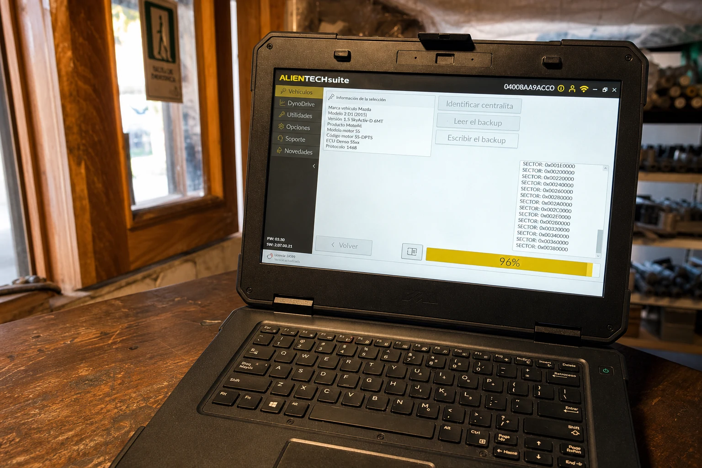
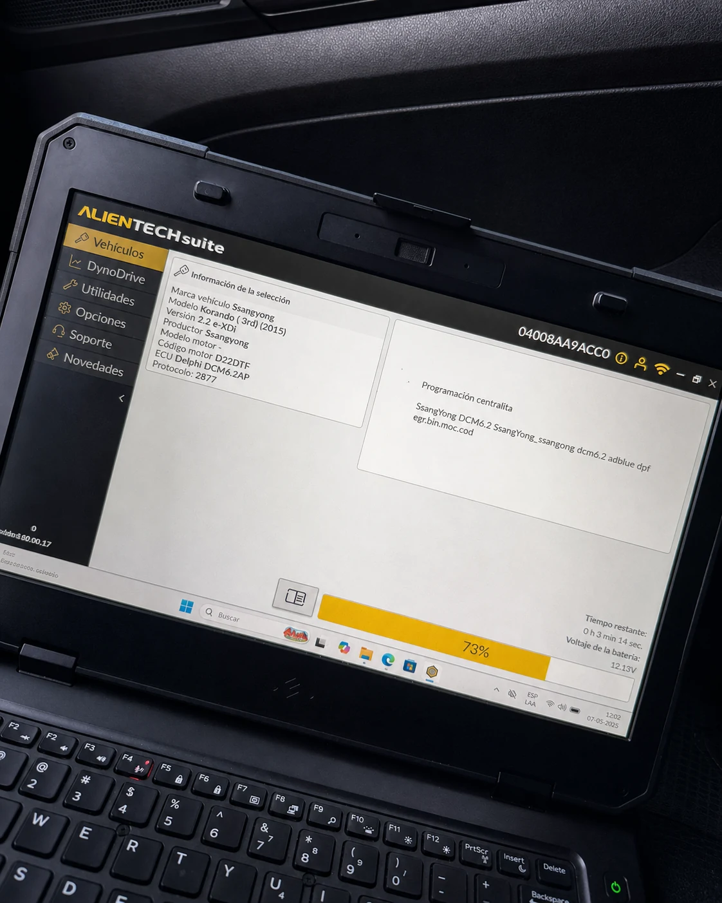

＋
Diagnóstico y scanner
Lectura de fallas y revisión técnica para encontrar la causa antes de cambiar piezas.

Servicio técnico · repuestos · equipamiento
Taller mecánico y 4WD en Coyhaique. Especialistas en soluciones y reparación de sistemas DPF y AdBlue, diagnóstico electrónico y mecánica multimarca.
Hecho en Coyhaique
En Adriazola 4WD resolvemos fallas mecánicas y electrónicas en autos, camionetas y máquinas. Nuestra especialidad incluye diagnóstico y reparación de sistemas DPF y AdBlue, además de mantenciones y reparaciones mayores.
⌖Encuéntranos enLos Maitenes 949, Coyhaique↗Qué hacemos
Atendemos lo cotidiano y lo complejo. Revisamos cada caso antes de recomendar una solución.
Lectura de fallas y revisión técnica para encontrar la causa antes de cambiar piezas.
Aceite, filtros, fluidos e inspecciones para evitar fallas y prolongar la vida útil.
Reparaciones de motor, transmisión y sistemas mecánicos para autos y camionetas.
Inspección y reparación de sistemas críticos para una conducción segura y estable.
Detección de fallas, iluminación y equipamiento eléctrico para tu vehículo.
Servicio, equipamiento y fabricación para máquinas recreativas y de trabajo.

Especialidad en Coyhaique
Diagnosticamos la causa de la falla y trabajamos sobre el sistema con equipamiento especializado. Una solución técnica pensada para vehículos diésel expuestos al frío, trayectos exigentes y las condiciones de la Patagonia.
Diagnóstico, regeneración asistida, revisión de sensores y reparación de fallas del filtro de partículas.
Evaluación de dosificación, sensores, bomba, inyector y códigos de falla del sistema de reducción de emisiones.
Revisión técnica del sistema de recirculación, actuadores y componentes asociados al control de emisiones.
Lectura electrónica, respaldo y calibración técnica de unidades de control con software especializado.

Dentro del taller
Una selección real de vehículos, máquinas y reparaciones realizadas dentro de nuestro taller en Coyhaique.


Cómo trabajamos
Primero entendemos el uso del vehículo. Después definimos el trabajo y te mantenemos al tanto.
Escríbenos por WhatsApp con el modelo y lo que necesitas.
Evaluamos el vehículo y acordamos el alcance antes de comenzar.
Ejecutamos el servicio y te explicamos lo realizado al entregar.
Hablemos de tu vehículo
Completa estos datos y abriremos una conversación de WhatsApp lista para enviar al taller.
“Haciendo la carretera Austral, tuvimos un problema de último momento con el filtro de aceite, llamamos a la noche y nos dijeron que fuéramos al día siguiente a primera hora, Pablo el dueño y su equipo nos resolvieron enseguida el problema, súper recomendado el servicio en especial para viajeros que necesitamos una solución rápida para continuar el viaje.”
“Ya casi al final de mis vacaciones, mi auto comenzó con un sonido extraño, busque varios lugares y ninguno tenía disponibilidad. Fui al taller de Pablo y me ayudaron con el problema de inmediato, la disponibilidad y amabilidad de el y su equipo se destaca, finamente me indicaron cual era el problema y la solución en el mismo momento.”
“Muy buen servicio efectivo y rapido. Me ayudaron de forma inmediata, tuve un problema con Homocinetica y ellos me pudieron conseguir el repuesto; en 2-3 horas ya me habían solucionado el problema. Los recomiendo tanto para gente de Coyhaique y viajeros que estén de paso por la ciudad.”
“Super recomendado. Me siento confiada en ir. Siempre han respetado los presupuestos y me han dejado el vehiculo funcionando impecable y en forma rápida.”
Ven al taller